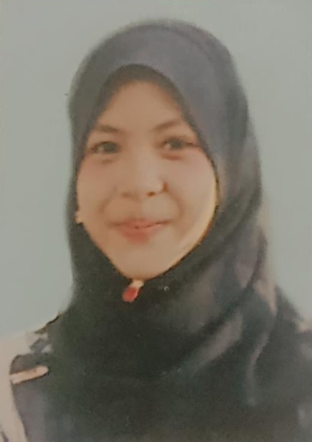

| Kindergarden |
I started school at Tadika Abim, Tanjung Malim, when I was six years old.
The location is only 5 kilometres from my house. Even so, I didn't enjoy going
to school at first. This was because I was a shy person who found it difficult
to make friends at the time. I had only one good friend at the time. In short,
I didn't enjoy my kindergarten, and I have forgotten the majority of my memories
from that time. Despite that, I eventually finished kindergarten, albeit reluctantly.
|
|
| Primary School |
When I was in primary school, I had only one friend which is my kindergarten
best friend. We go to the same school but in different classes. I had to make new
friends because we were in different classes. My life in primary school was not
particularly interesting because I still struggled to get along with others during
the first five years. However, this is not an excuse for me to fail in my studies.
Despite the fact that my exam results are not stellar, I tried to study. In my
final year, I began to adapt well and make friends, and finally, for the big exam
for students in primary school, I received 3B and 2C on the UPSR exam. |
 |
| Secondary School |
My secondary school is called SMK Methodist Tanjong Malim, and it is
where I took the SPM exam. When I was in fourth and fifth grades, I was a
student of accounting. Mathematics and science were my favourite subjects
at the time. I'm also an involved student in sports and extracurricular
activities. For the red sports house team, I am a long jumper and runner.
I'm a member of the KRS and hold the Corporal. High school experiences and
memories are extremely satisfying. My life transformed from shy and quiet
to friendly and boisterous. |
|
| Pre-University |
After SPM, I continued my study at SMK Proton City, Tanjong Malim,
to the STPM level. To be honest, I don't think it's going to be easy at that
point. My older sister inspired me to continue on to the STPM level. I'm
curious about my sister's personality, and most teachers agree that STPM
students have more mature personalities. That's the reason my struggled continued
at the STPM level. Despite the fact that it was extremely difficult lik hell, I
eventually made it. |
|
| University |
Now I am continuing my studies in the science library field at
UiTM Kedah. I'm in the third semester of a seven-semester programme. I'm
still struggling to keep going, but I'll keep trying to get the best
results I can. A good environment, as well as friends and housemates who
give me positive vibes, help me to keep going as a student. |
|